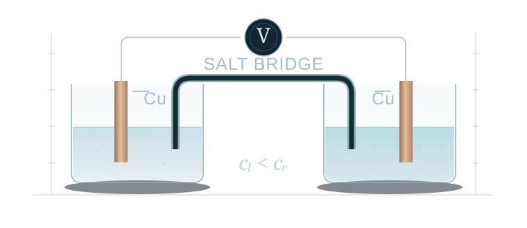
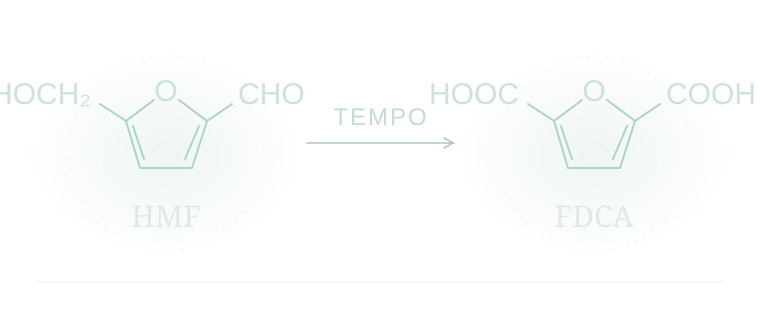

MODEL 01PRINCIPLE ILLUSTRATION CONCENTRATION CELL Cu²⁺ / Cu浓差电池从配液、混匀到电池组装与电压观测，研究实验过程如何改变溶液状态与电势响应。双池体系数值计算Matterix 原型进入浓差电池工作台↗
MODEL 02REACTION PATHWAY ELECTROCATALYTIC OXIDATION HMF → FDCA电催化氧化配置 TEMPO–HMF 反应条件，探索数值流程、文献条件下的终点预测与适用范围。TEMPO 介导独立数值模型反应条件分析进入电催化氧化工作台↗